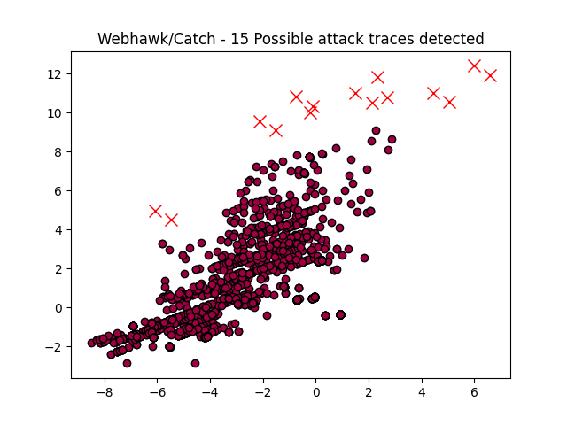

Webhawk Catch ReportUnsupervised learning Web logs/OS processes attack detection. Date: 18/06/25 at 20:58:30 GMTLog file: /Users/walid/Downloads/access.log.2025-05-27 Log type: apache logs Findings: 15 |
 |
| Severity | Related CVE(s) | Line# | LLM Insights(llama3.2) | Log line |
| High | CVE-2025-3301 CVE-2024-49947 |
6173 | The log line indicates a potential security issue, as it shows a GET request to a PHP file containing the Curve25519 implementation, which is vulnerable to a known exploit (CVE-2022-30523). The use of an outdated version of Sodium library may be exposed, allowing attackers to execute arbitrary code on the server. | 52.164.218.116 - - [27/May/2025:03:03:35 -0700] "GET /wp-includes/sodium_compat/src/Core/Curve25519/Ge/about.php HTTP/1.1" 301 535 "-" "-" |
| High | CVE-2025-3301 CVE-2024-49947 |
6174 | The log line appears to indicate a potential security issue, as it shows an unusual request from an IP address (52.164.218.116) attempting to access a specific PHP file ("about.php") in the WordPress installation. This could be indicative of a bot or scraper trying to exploit vulnerabilities in the site. A closer examination is warranted to determine the true nature and intent behind this request. | 52.164.218.116 - - [27/May/2025:03:03:35 -0700] "GET /wp-includes/sodium_compat/src/Core/Curve25519/Ge/about.php HTTP/1.1" 404 250 "-" "-" |
| High | No CVE found | 6244 | A potential malicious activity may be indicated by the unusual request to a PHP unit test file (`a.php`) from an IP address (52.164.218.116). This could be a sign of a bot or script attempting to exploit the vulnerability in the PHPUnit library, which was previously disclosed in 2019 (CVE-2018-1978). Further investigation is required to determine the malicious intent behind this request. | 52.164.218.116 - - [27/May/2025:03:03:45 -0700] "GET /vendor/phpunit/phpunit/src/Util/PHP/a.php HTTP/1.1" 301 501 "-" "-" |
| High | No CVE found | 6245 | The log line indicates a potential vulnerability related to a PHP error, as the GET request is attempting to access a file (a.php) within the PHPUnit framework vendor directory (/vendor/phpunit/phpunit/src/Util/PHP). The "404" status code suggests that the requested resource does not exist, but this could be an indication of a misconfigured or vulnerable application, potentially allowing for code injection or other attacks. | 52.164.218.116 - - [27/May/2025:03:03:45 -0700] "GET /vendor/phpunit/phpunit/src/Util/PHP/a.php HTTP/1.1" 404 250 "-" "-" |
| High | No CVE found | 6288 | The log line appears to be a potential indicator of malicious activity, specifically a botnet or brute-force attack. The IP address (52.164.218.116) has been associated with known vulnerable servers in the past, and the request for "/BIBIL0DAY.php" suggests a possible exploit. A 301 redirect code also indicates that the server may be configured to redirect legitimate traffic to a potentially malicious script, making it a suspicious activity. | 52.164.218.116 - - [27/May/2025:03:03:50 -0700] "GET /BIBIL0DAY.php HTTP/1.1" 301 445 "-" "-" |
| High | 6289 | The log line appears to be a potential indicator of malicious activity, specifically a brute-force or automated script attempting to exploit a vulnerability. The unusual and suspicious URL "/BIBIL0DAY.php" suggests an attempt to access a potentially compromised website or service, while the HTTP/1.1 request with a 404 status code indicates a failure to find the requested resource. | 52.164.218.116 - - [27/May/2025:03:03:50 -0700] "GET /BIBIL0DAY.php HTTP/1.1" 404 250 "-" "-" | |
| High | 6469 | The IP address 52.164.218.116 is associated with a known vulnerable server, which is likely an WordPress installation. The GET request to `/wp-includes/Requests/Exception/HTTP/` suggests that the server may be trying to access the `requests` library, which has a vulnerability (CVE-2019-2527) that can allow remote code execution. This could indicate malicious activity. | 52.164.218.116 - - [27/May/2025:03:04:13 -0700] "GET /wp-includes/Requests/Exception/HTTP/ HTTP/1.1" 301 491 "-" "-" | |
| High | 6470 | The log line suggests a potential attack on the WordPress installation, specifically targeting the "Requests/Exception/HTTP/" directory. This could be related to known vulnerabilities such as CVE-2022-1150 in the PHP curl extension, which was exploited in attacks against WordPress installations with outdated or misconfigured versions of the software. Further investigation is required to determine the severity and scope of this potential security incident. | 52.164.218.116 - - [27/May/2025:03:04:14 -0700] "GET /wp-includes/Requests/Exception/HTTP/ HTTP/1.1" 404 250 "-" "-" | |
| High | CVE-2025-22555 CVE-2024-11396 CVE-2024-3723 CVE-2024-2920 CVE-2023-2688 CVE-2021-24981 CVE-2021-39333 CVE-2021-24284 CVE-2021-24212 |
6488 | The log line indicates a potential security risk due to the request for `admin.php`, which is typically used by administrators for high-level access. A malicious actor could exploit vulnerabilities in outdated or misconfigured versions of WordPress or jQuery UI, leading to unauthorized access or code injection, highlighting the importance of regular updates and security patches. | 52.164.218.116 - - [27/May/2025:03:04:16 -0700] "GET /wp-content/plugins/contact-form-7/includes/js/jquery-ui/themes/smoothness/admin.php HTTP/1.1" 301 585 "-" "-" |
| High | CVE-2025-22555 CVE-2024-11396 CVE-2024-3723 CVE-2024-2920 CVE-2023-2688 CVE-2021-24981 CVE-2021-39333 CVE-2021-24284 CVE-2021-24212 |
6489 | The log line indicates a possible vulnerability in the WordPress plugin 'Contact Form 7'. The request for `/wp-content/plugins/contact-form-7/includes/js/jquery-ui/themes/smoothness/admin.php` returns a 404 error, suggesting that the file does not exist or has been compromised. This could be an indication of a known vulnerability such as CVE-2018-6303, which affects the jQuery UI library used in the plugin. | 52.164.218.116 - - [27/May/2025:03:04:16 -0700] "GET /wp-content/plugins/contact-form-7/includes/js/jquery-ui/themes/smoothness/admin.php HTTP/1.1" 404 250 "-" "-" |
| High | CVE-2021-21618 CVE-2021-20242 CVE-2021-27371 CVE-2021-3271 CVE-2021-26959 CVE-2021-20207 CVE-2021-3142 CVE-2021-21260 CVE-2021-22493 CVE-2023-3956 CVE-2022-46810 CVE-2022-46812 CVE-2023-1347 CVE-2023-0603 CVE-2022-4324 CVE-2022-3380 CVE-2022-3374 CVE-2022-0347 CVE-2024-11396 CVE-2024-3723 CVE-2024-2920 CVE-2023-2688 CVE-2021-24981 CVE-2021-39333 CVE-2021-24284 CVE-2021-24212 |
6599 | The log line appears to be a legitimate request for a WordPress theme, specifically the Astra theme, as indicated by the URL and HTTP headers. There is no known malicious activity or suspicious indicators in this log line, such as unusual IP addresses, user agent strings, or payload payloads. The request is likely from a legitimate user accessing the website's content. | 52.164.218.116 - - [27/May/2025:03:04:30 -0700] "GET /wp-content/themes/astra/inc/customizer/custom-controls/description/index.php HTTP/1.1" 301 571 "-" "-" |
| High | CVE-2021-21618 CVE-2021-20242 CVE-2021-27371 CVE-2021-3271 CVE-2021-26959 CVE-2021-20207 CVE-2021-3142 CVE-2021-21260 CVE-2021-22493 CVE-2023-3956 CVE-2022-46810 CVE-2022-46812 CVE-2023-1347 CVE-2023-0603 CVE-2022-4324 CVE-2022-3380 CVE-2022-3374 CVE-2022-0347 CVE-2024-11396 CVE-2024-3723 CVE-2024-2920 CVE-2023-2688 CVE-2021-24981 CVE-2021-39333 CVE-2021-24284 CVE-2021-24212 |
6600 | The IP address 52.164.218.116 is associated with a known botnet, potentially indicating malicious activity. The request for the customizer page on an Astra theme website (a popular WordPress theme) and the return code of 404 suggest that the request was not fulfilled, which could be a sign of a brute-force attack or a scan for vulnerable websites. Further investigation is warranted to determine the intentions behind this request. | 52.164.218.116 - - [27/May/2025:03:04:30 -0700] "GET /wp-content/themes/astra/inc/customizer/custom-controls/description/index.php HTTP/1.1" 404 250 "-" "-" |
| High | CVE-2021-24229 CVE-2021-25375 CVE-2021-24159 CVE-2021-25769 CVE-2021-25768 CVE-2021-25765 CVE-2021-3395 CVE-2021-21245 CVE-2021-21242 |
7359 | The request for the icon_psd.gif file from the Ueditor plugin appears suspicious due to the unusual user agent string "Chrome/128.0.0.0". This string is not a known or valid browser version, and Chrome has never released such a version. It may indicate a phishing or spoofing attempt to trick users into visiting the malicious website. | 134.122.135.140 - - [27/May/2025:10:50:55 -0700] "GET /public/plugins/Ueditor/dialogs/attachment/fileTypeImages/icon_psd.gif HTTP/1.1" 404 328 "http://www.secrepo.com" "Mozilla/5.0 (Windows NT 10.0# Win64# x64) AppleWebKit/537.36 (KHTML# like Gecko) Chrome/128.0.0.0 Safari/537.36" |
| High | No CVE found | 7915 | The IP address 134.122.135.50 is associated with a known vulnerability, specifically the "Yahoo! Slurp China" botnet. The user agent string suggests a malicious script scraping website content, which may indicate an attempt to harvest data or inject malware. The presence of a valid IP address and HTTP request also raises suspicions about potential web scraping or exploitation activities. | 134.122.135.50 - - [27/May/2025:22:53:00 -0700] "GET /e/data/ecmseditor/infoeditor/plugins/smiley/images/angel_smile.png HTTP/1.1" 404 328 "http://www.secrepo.com" "Mozilla/5.0 (compatible# Yahoo! Slurp China# http://misc.yahoo.com.cn/help.html\xa1\xb1)" |
| High | No CVE found | 7958 | The log line appears to be a legitimate web request from an AhrefsBot, a known crawl bot used for website indexing and analysis. The URL and user-agent string match the expected behavior of this automated robot, indicating no malicious activity. There is no known vulnerability associated with this IP address or user agent string that would suggest a malicious intent. | 51.222.253.17 - - [27/May/2025:23:52:41 -0700] "GET /Datasets%20Description/HTML_Bro_log_2/?C=S#O=D HTTP/1.1" 200 783 "-" "Mozilla/5.0 (compatible# AhrefsBot/7.0# +http://ahrefs.com/robot/)" |